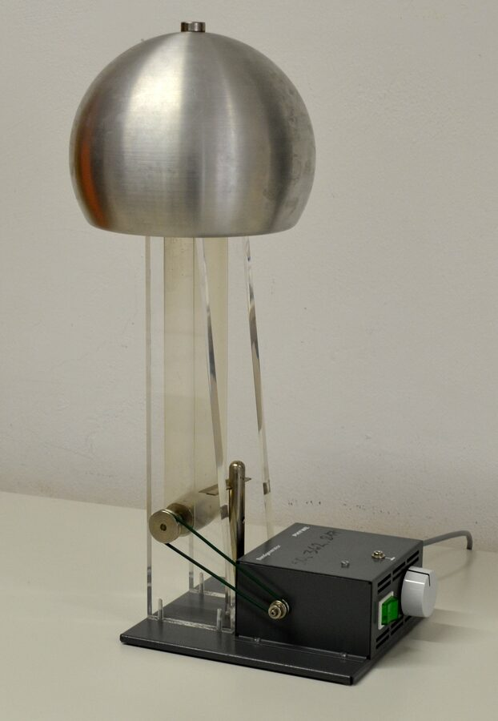

Physics · Lesson 15
Van de Graaff Generator
A rubber belt spins between two rollers, picking up charge by the triboelectric effect and carrying it to a metal dome. Charge accumulates until the electric field is strong enough to ionize air — a spark jumps, hair stands up, and students learn why thunderclouds have lightning.
Who Was Robert J. Van de Graaff?

Robert J. Van de Graaff (1901–1967) built his first generator in 1929 at Princeton using a silk ribbon and a tin can. By 1931 he had a 1.5-million-volt machine. His generators were used to accelerate particles into atomic nuclei for early nuclear physics experiments, effectively launching particle accelerator technology. Today, scaled-down versions are in every physics classroom, producing 100,000–400,000 volts — spectacular but safe.
How It Works
The generator has four key components working together in a continuous cycle:
- 1The bottom roller strips electrons from the belt by the triboelectric effect, leaving the belt positively charged.
- 2The moving belt carries positive charge up through the hollow column to the top.
- 3A metal comb at the top collects the charge and deposits it onto the inside of the dome.
- 4By Faraday's theorem, charge on the inside of a conductor redistributes immediately to the outer surface — the dome accumulates more and more charge each cycle.
Key Equations
Interactive Simulator
Watch the belt carry charge up to the dome. Voltage builds until breakdown — then a spark discharges the dome. Use the panel controls to change belt speed, sphere radius, and ground rod.
Real-World Applications
Practice Problems
Use V = kQ/r and E = V/r. k = 9 × 10⁹ N·m²/C². Air breakdown field = 3 × 10⁶ V/m.
Easy1. Charge accumulates on the inside of the Van de Graaff dome. True or False?
Easy2. What carries charge up to the dome inside a Van de Graaff generator?
Medium3. A Van de Graaff sphere has radius r = 0.15 m and holds charge Q = 2 μC. Calculate V = kQ/r (in V).
Medium4. Air breaks down at E = 3 × 10⁶ V/m. For a sphere of radius r = 0.1 m, what is the maximum voltage before sparking? V = E × r (in V).
Challenge5. Qmax = Emax × r² / k. For r = 0.2 m, how many μC can the sphere hold before breakdown? (Round to nearest μC.)
Innovator Profile · See Also